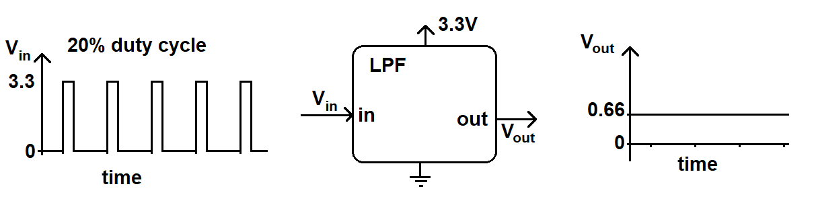

| Lecture: | 28 |
| Objective: | To introduce the concept of direct digital synthesis and use it to motivate the introduction of fixed point numbers. |
DDS
According to Analog Devices MT-085 tutorial, direct digital synthesis (DDS) is "... a digitally-controlled method of generating multiple frequencies from a reference frequency source..." In other words, DDS is a technique that allows you to produce some periodic waveform with a finely adjustable frequency. This lecture will focus on generating sine waves, but you can generate any periodic waveform. Understanding the hardware structure of a DDS system, shown below, will help you understand how to design one in software.
The clock source shown in this figure is the update rate of the DDS system and is entirely determined by your software. Every clock period, the Phase accumulator (a counter) is incremented by the value contained in the Phase register (a register). We will call the value stored in the Phase register the phase increment. By changing the phase increment, you change the frequency of the waveform generated by the DDS system. The integer part (more on this later) of the Phase accumulator output is used as the address to a ROM containing your waveform. The ROM contains a digitized version of your periodic waveform. In our diagram, the stored values of a sinusoid are shown in orange. An example of a 16-entry ROM given as a C-code snippet is shown below.
uint8_t sin[N] = {128 ,153 ,177 ,199 ,219 ,234 ,246 ,254 ,255 ,254 ,246 ,234 ,219 ,199 ,177 ,153 ,128 ,103 ,79 ,57 ,37 ,22 ,10 ,2 ,0 ,2 ,10 ,22 ,37 ,57 ,79 ,103};
Notice that the amplitude of the sine wave starts at 128 and does not finish
at 128. That is the sine wave does not complete a full wave, instead it ends
at 103, one value short of completing a full wave. This is important
because the Phase accumulator will roll-over from 15 to 0, thus forming a
correct transistion from 103 (the end of one wave) to 128 (the start of
the next sine wave).If we filled the DDS ROM with the 16 entries for the sine wave defined above, the address for the ROM would be 4-bit bits wide, generating addresses between 0 and 15. Also the ROM would be 8-bits wide so that it could accommodate the range of values between 0 - 255. The output from the ROM is feed into a duty cycle register (PWMDTY) of the PWM subsystem. The output PWM waveform is sent to a low pass filter (LPF) which averages the PWM waveform. This means that a 3.3V PWM waveform with a 20% duty cycle will have a LPF output of 20% of 3.3V or 0.2*3.3V = 0.66V.

This produces a reasonably good analog value. Now to the DDS algorithm strings together a series of these analog values to produce an analog waveform as shown in the image below.

Now let's take a look at the math that relates the phase increment to the frequency of the output waveform.
Phase Increment
Lets say that the update rate was 10us and the phase increment was 1. This means that every 10us, the address to the ROM would increase by 1. It follows that it would take 64*10us = 640us to go from the start (address 0) to the end (address 63) of the ROM. In those 640us you would generate 1 wave of the sinusoid. The recirorical of 640us/1 wave is 1,563 waves per second or 1.563kHz.Now let's change the phase increment to 2 while leaving the update rate alone. Now it would only take you 32*10us = 320us to go from the start to the end of the ROM. Thus the period of the wave would be 320us or a frequency of 3.125kHz. Since we will be working with more complex calculations in a minute, let's use dimensional analysis to arrive at this result.
1 update 10^6 us 2 phase inc 1 wave 3,125 waves
-------- * ------- * ----------- * ------------- = -----------
10us 1 sec 1 update 64 phase inc second
For the time being we will allow fractional phase increments and
fractional values for the phase accumulator. In this case you can
assume that the output of the phase accumulator is truncated to an
integer before being used as the address to the ROM. We will
return to this assumption later and see how this can be accomplished
in hardware.
Problem:
Given: A DDS system with an update rate of 10us, a 64 entry ROM, and a phase increment of 1.92. Find the frequency of the output waveform.
Answer:
1 update 10^6 us 1.92 phase inc 1 wave
-------- * ------- * -------------- * ------------ = 3kHz
10us 1s 1 update 64 phase inc
Problem:Given: A DDS system with an update rate of 10us, a 64 entry ROM. Find the phase increment to generate a 8.5kHz wave.
Answer:
1 update 10^6 us X phase inc 1 wave
-------- * ------- * ----------- * ----------- = 8.5kHz
10us 1s 1 update 64 phase inc
Solving yields X = 5.44Using integer values for the phase increment and phase accumulator would be very limiting. We need a way to allow fractional values for these two quantities. You can accomplish this by using fixed-point mathematics.
Fixed Point
Binary numbering is a positional numbering system: the position of a digit determines its magnitude in the resulting value. In a positional number system every digit is given an index, describing the position of the digit in the number. The digit immediately to the left of the decimal point has index 0. Index increases (by consecutive integers) to the left and decreases (by consecutive integers) to the right. Thus, to the right of the decimal point the digits have a negative index. The value of a number is the result of putting the digits of a number into the equation:where the base of the numbering system is the number of allowed digits (e.g. the binary base is 2 since it can take on two values: 0 and 1). The following power of 2 table should help you in your conversions.
| Index | weight |
| 7 | 128 |
| 6 | 64 |
| 5 | 32 |
| 4 | 16 |
| 3 | 8 |
| 2 | 4 |
| 1 | 2 |
| 0 | 1 |
| -1 | 0.5 |
| -2 | 0.25 |
| -3 | 0.125 |
| -4 | 0.0625 |
| -5 | 0.03125 |
| -6 | 0.015625 |
| -7 | 0.0078125 |
| -8 | 0.00390625 |
We will have a strong preference for N.M format numbers where N+M is 8, 16, or 32 because these numbers will fit into our standard data-type sizes. Now let's do some fixed point conversions to test our understanding.
Question:
What value does 01001010 equal when interpreted as a 6.2 format number?
Answer:
For the sake of deriving an answer, I'll explicitly represent the decimal point format in the binary representation as 010010.10 The whole number portion is (010010)2 = 18 in decimal. The binary fraction is (0.10)2 which is 0.5 decimal. So when you interpret 0b0100 1010 as a 6.2 format number its value is 18.5
Question:
What value does 01001010 equal when interpreted as a 2.6 format number?
Answer:
For the sake of deriving an answer, I'll explicitly represent the decimal point format in the binary representation as 01.001010 The whole number portion is (01)2 = 1 in decimal. The binary fraction is (0.001010)2 which is 0.15625 decimal. So when you interpret 0b0100 1010 as a 2.6 format number its value is 1.15625
Question:
Represent 12.3125 as a 4.4 format number.
Answer:
The most intuitive way to arrive at an answer is to represent 12.3125 as the sum of powers of 2.
12.3125 = 23+22+2-3+2-4 =1100.0011
While an intuitive route to the solution, this not the easiest way to arrive at the solution, not by a long shot. Let's explore an alternative.
Take the number 12.3125 and multiply it by 24 = 16. This yields 12.3125 * 16 = 197. Next represent 197 in binary yielding 11000011. Finally, to get back to our orginal value, we will divide the binary form of 197 by 16 = 24. If we perform this operation in binary, all we need to do is to shift the decimal point of the binary representation left by 4-bits. This will yield 1100.0011, a 4.4 format number.
In summary, to convert a decimal number D into a N.M format number:
- Check that the integer part of D is less than 2N. If not, you cannot "fit" D into a N.M format number.
- Multiply D and 2M to get B.
- Round B to the closest integer.
- Represent B in binary.
- Divide B by 2M by shifting the decimal point in B M-bits to the left.
Question:
Determine the representation for 5.4375 as a 4.4 format number.
Answer: Since there are 4 bits to the right of the decimal point, we will multiply 5.4375 * 24 = 87 = 01010111 In order to represent our original value, we need to shift the decimal point left 4 bits yielding 0101.0111.
Question:
Assume a 16-bit fixed point representation in 6.10 notation. Determine the representation for 5.44
Answer:
Since there are 10 bits to the right of the decimal point, we will multiply 5.44 * 210 = 5571 = 0001 0101 1100 0011 In order to represent our original value, we need to shift the decimal point left 10 bits yielding 000101.0111000011
Test your understanding
You can find the solutions embedded in the "source code" for this web page by right mouse clicking on this web page and selecting "view source". The solutions are in HTML comments.- Given an update rate of 10us, a 64-entry ROM, what phase increment would yield a 2kHz wave?
- Given an update rate of 25us, a phase increment of 0.35, and a ROM with 16 entries, what is the frequency of the output waveform?
- What is the 3.5 format numbering representation of decimal 3.6?
- Interpret 01001101 as a 4.4 format number.
- Determine the representation of 5.4375 as a 3.5 format number. Also calculate the error of this representation.
- Determine the representation of 5.4375 as a 4.4 format number. Also calculate the error of this representation.
- Determine the representation of 5.4375 as a 5.3 format number. Also calculate the error of this representation.
- Determine the representation of 5.4375 as a 6.2 format number. Also calculate the error of this representation.
- Determine the representation of 5.4375 as a 7.1 format number. Also calculate the error of this representation.
- Determine the representation of 5.4375 as a 8.0 format number. Also calculate the error of this representation.
- Compile the previous result into the following table, what is
the general trend in error as a function of the format?
Format Binary Error 3.5 4.4 5.3 6.2 7.1 8.0